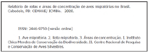

Relatório de rotas e áreas de concentração de aves migratórias no Brasil
Créditos
REPÚBLICA FEDERATIVA DO BRASIL
Presidente
JAIR MESSIAS BOLSONARO
Vice-Presidente
ANTÔNIO HAMILTON MARTINS MOURÃO
MINISTÉRIO DO MEIO AMBIENTE
Ministro
RICARDO DE AQUINO SALLES
Secretário de Biodiversidade e Floresta
EDUARDO SERRA NEGRA CAMERINI
INSTITUTO CHICO MENDES DE CONSERVAÇÃO DA BIODIVERSIDADE
Presidente
HOMERO DE GIORGE CERQUEIRA
Diretor de Pesquisa, Avaliação e Monitoramento da Biodiversidade
MARCOS AURÉLIO VENÂNCIO
Coordenadora do Centro Nacional de Pesquisa e Conservação de Aves Silvestres
PRISCILLA PRUDENTE DO AMARAL
Diretoria de Pesquisa, Avaliação e Monitoramento da Biodiversidade
Coordenação Geral de Estratégias para a Conservação
EQSW 103/104 - Centro Administrativo Setor Sudoeste - Bloco D - 1º andar
CEP 70670-350 - Brasília/DF - Tel: 61 3341-9055 - Fax: 61 3341-9068
www.icmbio.gov.br
Relatório de Rotas e Áreas de Concentração de Aves Migratórias no Brasil
3a Edição | 2019
Documento elaborado por (em ordem alfabética):
Camila Garcia Gomes
Camile Lugarini
Danielle Paludo
Diego Mendes
Manuella Andrade de Souza
Marcos de Souza Fialho
Mauricio Cavalcante dos Santos
Nathalia Alves
Patrícia Pereira Serafini
Priscilla Prudente do Amaral
REVISÃO TÉCNICA
Camila Garcia Gomes
Manuella Andrade de Souza
Marcos de Souza Fialho
Mauricio Cavalcante dos Santos
Priscilla Prudente do Amaral
MAPAS
Mauricio Cavalcante dos Santos
SUPERVISÃO TÉCNICA E REVISÃO FINAL
Marcos de Souza Fialho
Mauricio Cavalcante dos Santos
Priscilla Prudente do Amaral
CAPA, PROJETO GRÁFICO E DIAGRAMAÇÃO
Marília Ferreira
FOTO DA CAPA
José Anselmo D’Affonsêca Neto (Pandion haliaetus)
Catalogação na fonte:
Biblioteca do ICMBio
